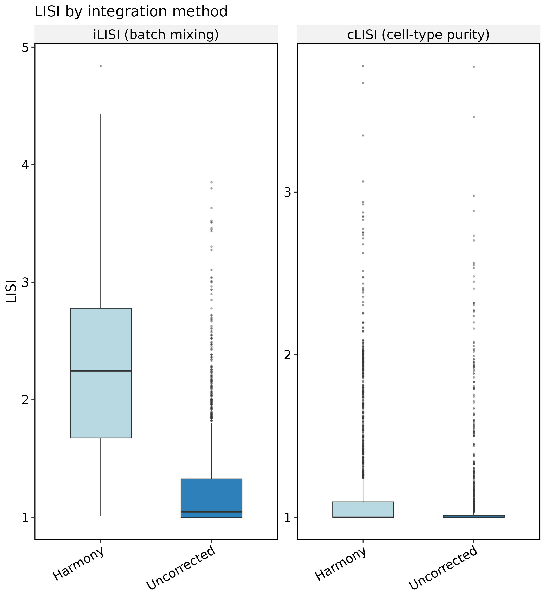
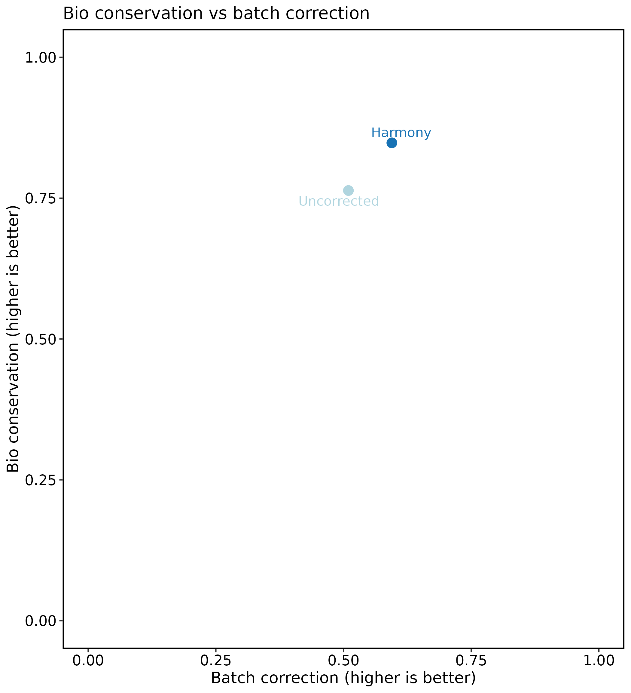
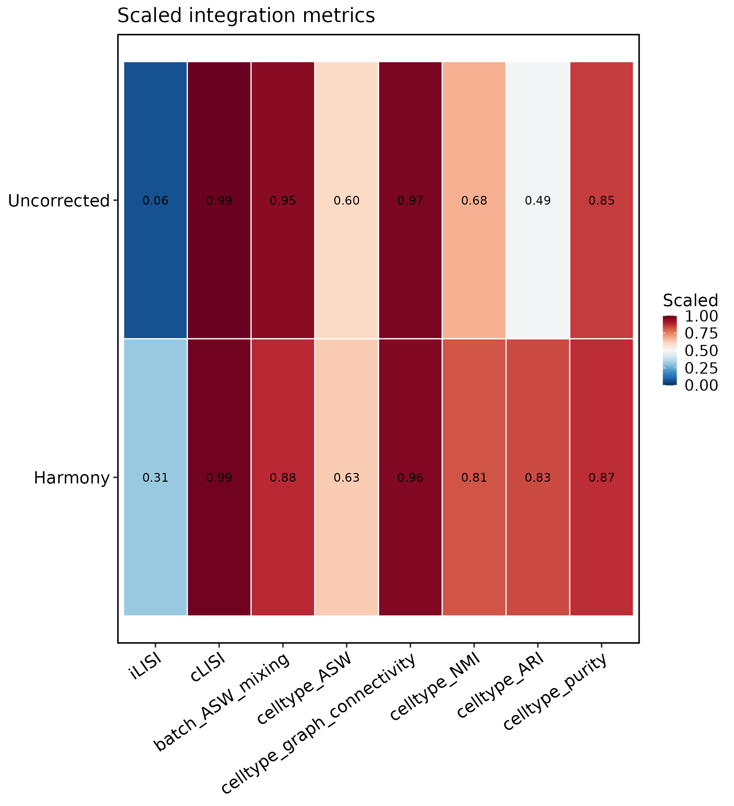

Integration benchmark workflow
Source:vignettes/integration-benchmark-workflow.Rmd
integration-benchmark-workflow.RmdThis article compares batch-correction methods on the same scRNA-seq
object with [RunIntegrationBenchmark()]. The runner scores each
latent embedding (not UMAP) with scIB-style metrics,
stores tables in srt@tools$IntegrationBenchmark, and
returns the Seurat object for plotting with
[IntegrationBenchmarkPlot()].
Use this workflow when you need a reproducible side-by-side report
for Uncorrected, Harmony,
fastMNN, or other [RunIntegration()] methods on the same
input.
Load data
library(scop)
#> ⬢ . ⬡ ⬢ .
#> _____ _________ ____
#> / ___// ___/ __ ./ __ .
#> (__ )/ /__/ /_/ / /_/ /
#> /____/ .___/.____/ .___/
#> /_/
#> ⬢ . ⬡ . ⬢
#> ------------------------------------------------------------
#> Version: 0.9.0 (2026-08-21 update)
#> Website: https://mengxu98.github.io/scop/
#>
#> Python environment initialization is disabled
#> To enable it, set: options(scop_env_init = TRUE)
#>
#> The message can be suppressed by:
#> suppressPackageStartupMessages(library(scop))
#> or options(log_message.verbose = FALSE)
#> ------------------------------------------------------------
data(panc8_sub)
table(panc8_sub$tech)
#>
#> celseq celseq2 fluidigmc1 indrop smartseq2
#> 200 200 200 800 200
table(panc8_sub$celltype)
#>
#> acinar activated-stellate alpha beta
#> 164 50 483 428
#> delta ductal endothelial epsilon
#> 111 237 26 3
#> gamma macrophage mast quiescent-stellate
#> 67 9 7 14
#> schwann
#> 1Run the benchmark
Keep the batch column (tech) and a biological label
column (celltype) fixed across methods. LISI and clustering
metrics are computed on each method’s latent reduction (for example
Harmony or Uncorrectedpca).
panc8_sub <- RunIntegrationBenchmark(
panc8_sub,
batch = "tech",
celltype = "celltype",
methods = c("Uncorrected", "Harmony"),
nHVF = 500,
linear_reduction_dims = 20,
linear_reduction_dims_use = 1:10,
perplexity = 10,
verbose = FALSE
)
#> ℹ [2026-08-23 01:28:10] Checking a list of <Seurat>...
#> ! [2026-08-23 01:28:11] Data 1/5 of the `srt_list` is "unknown"
#> Warning: Data 1/5 of the `srt_list` is "unknown"
#> ℹ [2026-08-23 01:28:11] Perform `NormalizeData()` with `normalization.method = 'LogNormalize'` on 1/5 of `srt_list`...
#> ℹ [2026-08-23 01:28:11] Perform `FindVariableFeatures()` on 1/5 of `srt_list`...
#> ! [2026-08-23 01:28:11] Data 2/5 of the `srt_list` is "unknown"
#> Warning: Data 2/5 of the `srt_list` is "unknown"
#> ℹ [2026-08-23 01:28:11] Perform `NormalizeData()` with `normalization.method = 'LogNormalize'` on 2/5 of `srt_list`...
#> ℹ [2026-08-23 01:28:11] Perform `FindVariableFeatures()` on 2/5 of `srt_list`...
#> ! [2026-08-23 01:28:11] Data 3/5 of the `srt_list` is "unknown"
#> Warning: Data 3/5 of the `srt_list` is "unknown"
#> ℹ [2026-08-23 01:28:11] Perform `NormalizeData()` with `normalization.method = 'LogNormalize'` on 3/5 of `srt_list`...
#> ℹ [2026-08-23 01:28:11] Perform `FindVariableFeatures()` on 3/5 of `srt_list`...
#> ! [2026-08-23 01:28:11] Data 4/5 of the `srt_list` is "unknown"
#> Warning: Data 4/5 of the `srt_list` is "unknown"
#> ℹ [2026-08-23 01:28:11] Perform `NormalizeData()` with `normalization.method = 'LogNormalize'` on 4/5 of `srt_list`...
#> ℹ [2026-08-23 01:28:11] Perform `FindVariableFeatures()` on 4/5 of `srt_list`...
#> ! [2026-08-23 01:28:11] Data 5/5 of the `srt_list` is "unknown"
#> Warning: Data 5/5 of the `srt_list` is "unknown"
#> ℹ [2026-08-23 01:28:11] Perform `NormalizeData()` with `normalization.method = 'LogNormalize'` on 5/5 of `srt_list`...
#> ℹ [2026-08-23 01:28:11] Perform `FindVariableFeatures()` on 5/5 of `srt_list`...
#> ℹ [2026-08-23 01:28:11] Use the separate HVF from `srt_list`
#> ℹ [2026-08-23 01:28:11] Number of available HVF: 500
#> ℹ [2026-08-23 01:28:11] Finished check
#> ℹ [2026-08-23 01:28:16] Perform Uncorrected integration
#> Warning: No layers found matching search pattern provided
#> Warning: Layer 'scale.data' is empty
#> ℹ [2026-08-23 01:28:19] Reorder clusters...
#> ℹ [2026-08-23 01:28:19] Skip `log1p()` because `layer = data` is not "counts"
#> ℹ [2026-08-23 01:28:31] Checking a list of <Seurat>...
#> ℹ [2026-08-23 01:28:31] Data 1/5 of the `srt_list` has been log-normalized
#> ℹ [2026-08-23 01:28:31] Perform `FindVariableFeatures()` on 1/5 of `srt_list`...
#> ℹ [2026-08-23 01:28:31] Data 2/5 of the `srt_list` has been log-normalized
#> ℹ [2026-08-23 01:28:31] Perform `FindVariableFeatures()` on 2/5 of `srt_list`...
#> ℹ [2026-08-23 01:28:31] Data 3/5 of the `srt_list` has been log-normalized
#> ℹ [2026-08-23 01:28:31] Perform `FindVariableFeatures()` on 3/5 of `srt_list`...
#> ℹ [2026-08-23 01:28:32] Data 4/5 of the `srt_list` has been log-normalized
#> ℹ [2026-08-23 01:28:32] Perform `FindVariableFeatures()` on 4/5 of `srt_list`...
#> ℹ [2026-08-23 01:28:32] Data 5/5 of the `srt_list` has been log-normalized
#> ℹ [2026-08-23 01:28:32] Perform `FindVariableFeatures()` on 5/5 of `srt_list`...
#> ℹ [2026-08-23 01:28:32] Use the separate HVF from `srt_list`
#> ℹ [2026-08-23 01:28:32] Number of available HVF: 500
#> ℹ [2026-08-23 01:28:32] Finished check
#> Warning: No layers found matching search pattern provided
#> Warning: Layer 'scale.data' is empty
#> ℹ [2026-08-23 01:28:32] Perform `Seurat::ScaleData()`
#> ℹ [2026-08-23 01:28:32] Perform linear dimension reduction("pca")
#> ℹ [2026-08-23 01:28:33] Reorder clusters...
#> ℹ [2026-08-23 01:28:33] Skip `log1p()` because `layer = data` is not "counts"Print summary tables
Use thisplot::print_colored_table() on the stored
tables. The summary view shows scaled overall, bio, and batch scores;
the metrics view lists every metric per method.
bench <- panc8_sub@tools$IntegrationBenchmark
thisplot::print_colored_table(
bench$summary,
by = "row",
palette = "Chinese"
)
#> method status overall bio batch iLISI cLISI celltype_ASW batch_ASW_mixing celltype_graph_connectivity celltype_ARI celltype_NMI runtime_s latent umap
#> Uncorrected success 0.6619509 0.7635503 0.5095517 0.06465491 0.9940998 0.5987168 0.9544486 0.9724301 0.4879958 0.6786843 21.048 Uncorrectedpca UncorrectedUMAP2D
#> Harmony success 0.7467326 0.8481556 0.5945980 0.31237004 0.9864901 0.6264387 0.8768259 0.9628357 0.8281797 0.8149896 14.358 Harmony HarmonyUMAP2D
metrics <- bench$metrics
metrics <- metrics[
!grepl("_LISI_mean$", metrics$metric),
,
drop = FALSE
]
thisplot::print_colored_table(
metrics,
by = "col",
palette = "Paired"
)
#> metric category value scaled direction method
#> batch_ASW_mixing batch 0.9544486 0.95444859 higher Uncorrected
#> celltype_ASW bio 0.1974336 0.59871681 higher Uncorrected
#> celltype_graph_connectivity bio 0.9724301 0.97243007 higher Uncorrected
#> celltype_NMI bio 0.6786843 0.67868425 higher Uncorrected
#> celltype_ARI bio 0.4879958 0.48799584 higher Uncorrected
#> celltype_purity bio 0.8493750 0.84937500 higher Uncorrected
#> iLISI batch 1.2586196 0.06465491 higher Uncorrected
#> cLISI bio 1.0708023 0.99409981 higher Uncorrected
#> batch_ASW_mixing batch 0.8768259 0.87682592 higher Harmony
#> celltype_ASW bio 0.2528773 0.62643867 higher Harmony
#> celltype_graph_connectivity bio 0.9628357 0.96283573 higher Harmony
#> celltype_NMI bio 0.8149896 0.81498959 higher Harmony
#> celltype_ARI bio 0.8281797 0.82817974 higher Harmony
#> celltype_purity bio 0.8700000 0.87000000 higher Harmony
#> iLISI batch 2.2494802 0.31237004 higher Harmony
#> cLISI bio 1.1621187 0.98649011 higher Harmony Plot all views
IntegrationBenchmarkPlot() with
plot_type = "auto" returns a named list: box
(per-cell LISI), heatmap, scatter, and
umap.
plots <- IntegrationBenchmarkPlot(panc8_sub, verbose = FALSE)
names(plots)
#> [1] "box" "heatmap" "scatter" "umap"
plots$box
plots$scatter
plots$heatmap
Individual plot types are also available:
IntegrationBenchmarkPlot(panc8_sub, plot_type = "box")
IntegrationBenchmarkPlot(panc8_sub, plot_type = "umap")What to report
A compact integration benchmark report should include:
- batch and cell-type columns used for scoring;
- methods compared and shared integration parameters
(
nHVF, latent dimensions); - the colored summary and metrics tables;
- LISI boxplots, bio-vs-batch scatter, and UMAP panels colored by batch and cell type.
Overall score uses scIB weights:
0.6 * bio + 0.4 * batch. Higher is better for all scaled
metrics shown in the summary table.